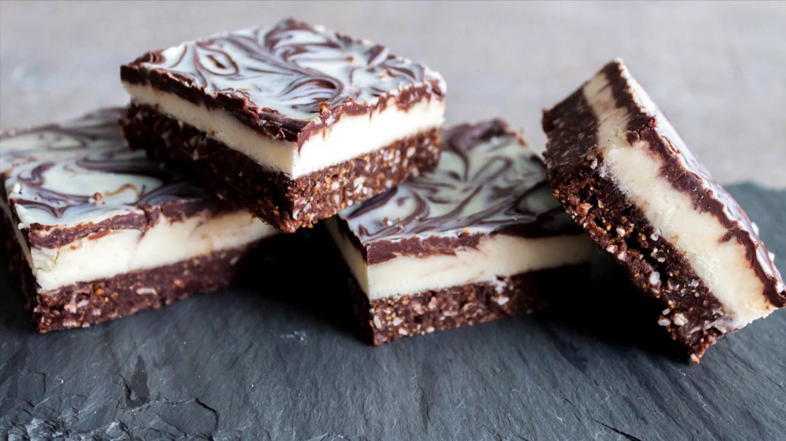

Introduction
Nanaimo bars came from a typical Pacific coast town on an island in British Colombia called Nanaimo. This is a kind of dessert contains a soft layer between two pieces of chocolate, and the layer in the middle is always made by coconut. Although this cuisine has appeared for a long time, people found the first known recipe in 1952 with the name of “chocolate square”.
Spread of the Nanaimo bar
This food became popular after the Second World War because people were fascinated by the special taste, and it is a kind of dessert that did not need to be baked, it is so convenient that people began to try this food in their houses. After that, Canadian made it became famous in the world by introducing it in the Expo 86.
In 2006, the National Post declared Nanaimo bars as the most popular confection in the country. Now, people can find them in many coffee shops in North America, and they would like to enjoy them during their leisure time.
Vanilla version of Nanaimo bar
Many white-collar workers prefer to get some Nanaimo bars a cup of coffee in their afternoons, absolutely, it is a kind of way that Canadian enjoy their afternoon tea. Actually, there are a lot of variations of Nanaimo bars in the shops, such as mint, peanut butter, cherry, pina colada, and even Grand Marnier.
However, in many people’s minds, they would rather choose the traditional Nanaimo bars, because they believe that it is more orthodox than any other variations.
Interesting fact : About Nanaimo bar
In 1986, the Mayor of Nanaimo was Graeme Roberts, he conducted a competition to find the ultimate Nanaimo bar recipe. There were almost 100 different recipes were submitted.
Meanwhile, Nanaimo bar is one of the three most meaningful desserts in Canada because of its long history. In 2019, Canada Post announced a series of stamps with pictures of Nanaimo bars.